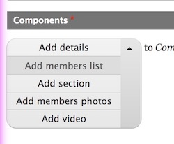

Test mode is enabled by default when DRUPAL_ENV does not equal DRUPAL_ENV_PROD. This means that test classes will be appened to elements whenever the function loft_core_test_class() is used.
When not in test mode, test classes will not be added.
In order to test against a production environment you need to enable test mode using an endpoint. You must set up the endpoint with an access key in your settings.php like this:
$config['loft_core.settings']['test_mode_url_token'] = '{some obscure public key that will appear in your url}';
When you visit the url endpoint, include the testing key like so:
/loft-core/testing/enable/{test_mode_url_token}
This will enable the test mode for a short duration and cause test classes to appear on production, for your IP only. The response is JSON and contains the expiry timestamp.

The buttons on a paragraph element widget are really tricky, use loft_core_paragraphs_element_add_test_classes to simplify test classes.
In a form alter hook do something like:
loft_core_paragraphs_element_add_test_classes($form, [
'field_components',
]);
To target the dropbutton toggle you may need to pick one of these:
.t-field_components_add .dropbutton__toggle
.t-field_components_add .dropbutton-toggle button
To target any of the add paragraph buttons:
.t-field_components_add__members_list
.t-field_components_add__members_photos
.t-field_components_add__...
To target any paragraph that has been added:
.t-field_components__item
.t-field_components__item1
.t-field_components__item...
This has shown up for WYSIWYG text areas, to handle this use also the element for your selector like this:
- .t-field_description
+ textarea.t-field_description
You may need to upgrade your selectors to use the select portion:
select.t-field_newsletter